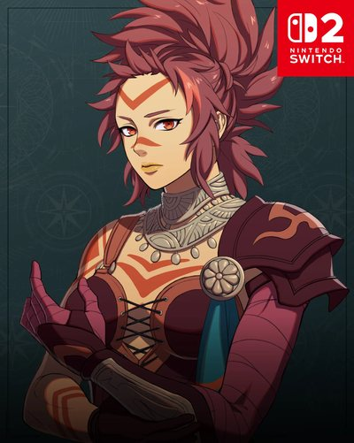

COMPANION DOSSIER
伊尼奥尼
イニオニ · 布拉干萨同胞团（ブラガンサ同胞団）
检索别名：易尼奥尼 / 伊尼奥尼 / 伊尼奧尼 / Inyoni
喜欢什么，送什么
礼物反应分歧，待核验
喜欢的东西：家族、故乡、狩猎、农活、弓的保养
查看送礼原文与例外 →第一部 · 各路线加入条件
- 凯伊线
- 3S / 8R ・6000G
- 迪托利希线
- 3S / 8R ・6000G
- 赛奥朵拉线
- 1S / 9R ・4000G
- 蕾达线
- 1S / 7R ・3000G
S = 支援等级 · R = 名声等级 · — = 无法招募
查看招募原文与附加说明 →交涉要准备什么
金币按本线支付 3000–6000G
先达到本线支援与名声门槛，再支付指定金币。Game8说明不能议价。四线门槛与金额经GameWith、AppMedia核对，与原表一致；首次出现章节在来源间有分歧，暂不设固定最早招募章。
适用：凯伊线 / 迪托利希线 / 赛奥朵拉线 / 蕾达线
- 凯伊线
- 支援3／名声8；支付6000G。
- 迪托利希线
- 支援3／名声8；支付6000G。
- 赛奥朵拉线
- 支援1／名声9；支付4000G。
- 蕾达线
- 支援1／名声7；支付3000G。
怎么养，怎么转职
编辑培养建议
弓战技单发输出／步兵命中与骑射机动二选一
- 前期
- 完成本线招募后，以弓系承担主动射击与补刀；入队时若仍是弓箭手，可直接继续培养。个人技能「強弓使い」只在持弓时力+3；学会「ぶち抜き+」后，弓战技攻击另获攻击力+4、必杀+10，普通射击不享有这项战技增益。先集中弓术，不因斧术也擅长就同时分练两系。
- 中期
- 省训练的方案是弓箭手→狙击手：弓术B备考，兵种自带弓命中+10、战技装备+2，精通后还可取得持弓命中+15的「射击专家」。队伍更缺机动射手时，另补马术D走森林骑士；其弓命中+5、战技装备+1低于狙击手，换取骑乘赶路与补位。先选实际需要的一条，不必为了收集技能把两种上级职都练满。
- 后期目标
- 第三部沿步兵弓可选宗师射手，以弓术A备考，兵种弓命中+15、战技装备+3适合多种弓战技切换；骑射方向可选ボウナイト，以弓术A、马术D准备，另须修复カーラ神殿并完成「カーラの依頼」。后者更偏机动，兵种弓命中+10、战技装备+2；委托或考试尚未开放时继续用已成形的狙击手／森林骑士。
- 考试与解锁
- 上级考试还要上级票证，帝都售票员标价3000G；第三部フィーナの漁村市场的最上级票证标价8000G，每次考试各消耗相应票证1张。除本线3000–6000G招募费，另留训练、武器与补考预算；有现成票证不必重复购买。弓B／A与马D是备考目标，开放条件和实际通过率以当前存档为准，不把推荐等级当作硬性转职等级。
- 取舍与限制
- 「射击安定」只在步兵持弓／魔法时命中+5，转成骑兵不能仅凭装备栏有此技能就计入加成。森林骑士精通「猎人之眼」只在持弓追击时攻击力+3，本身不会让角色更容易追击。优先确认命中、攻速与反击范围，不靠必杀保证击杀，也不因力量较高就让她独自承伤。凯伊已有彼得、赛奥朵拉已有莉利安且弓位够用时，先养现成弓手更省招募与训练资源。
这些是阶段性培养方向，并非必须逐级转职的固定链。适用难度及版本未做独立实测；优先满足当前队伍缺口。
GameWith · 伊尼奥尼 ↗Game8 · 伊尼奥尼 ↗GameWith · 狙击手 ↗Game8 · 狙击手 ↗GameWith · 森林骑士 ↗Game8 · 森林骑士 ↗GameWith · 宗师射手 ↗Game8 · 宗师射手 ↗GameWith · ボウナイト ↗Game8 · ボウナイト ↗Game8 · 考试票证 ↗GameWith · 上级考试票证 ↗GameWith · 最上级考试票证 ↗GameCap · 第三部商店 ↗天馬騎士団 · 技能表 ↗ちゅこっと陽だまる · 凯伊线招募实玩 ↗竹馬 · 蕾达Hard/Classic第一部实玩 ↗攻略来源交叉参考 · 未作游戏内实测
本次新增条目经过来源页面核对，未逐项游戏内实测。没有补充明细的“交涉”仍待核验，不表示没有额外要求。